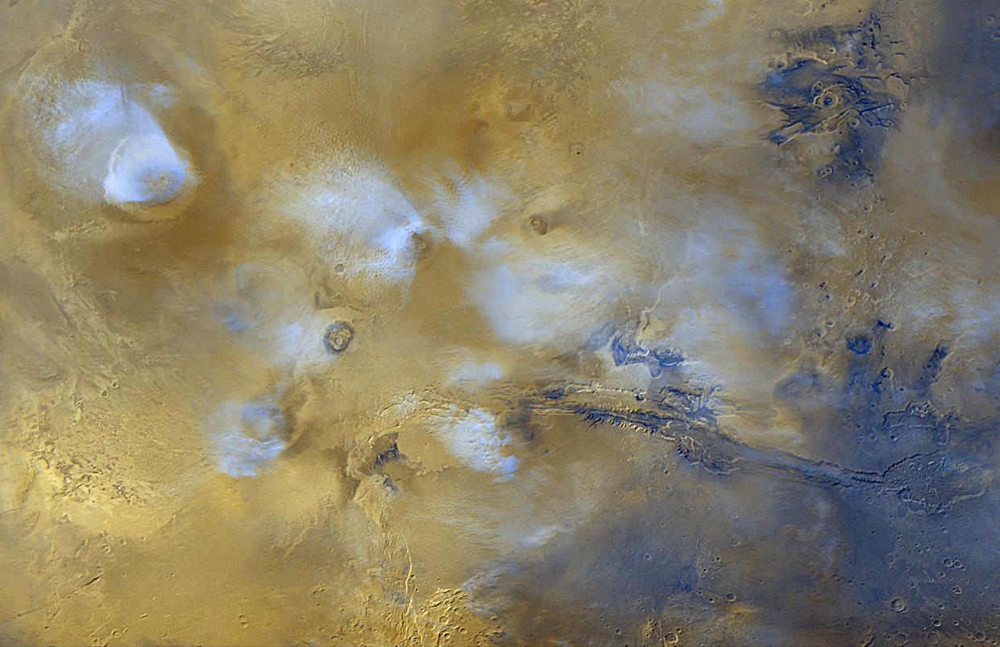
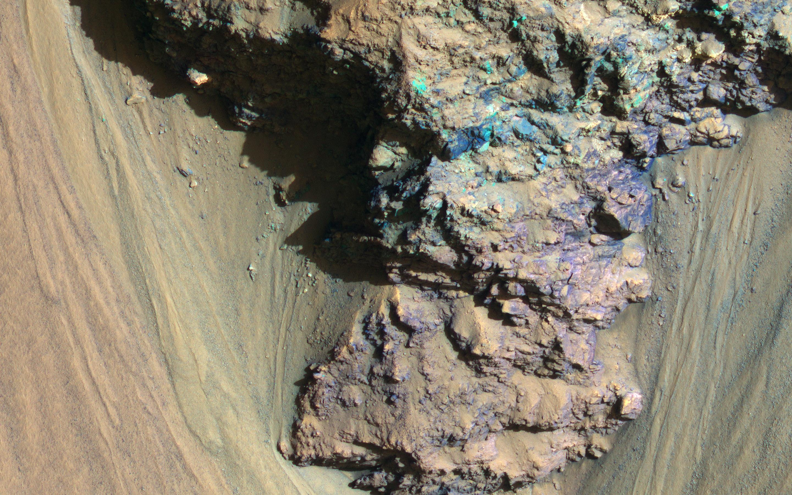

Join the greatest mountain adventure of all time, which outshines even the Himalayas with its challenges! Conquer some of the highest peaks on Mars (Ascraeus Mons, Pavonis Mons, Arsia Mons, and Olympus Mons) and conquer elevations of up to 15 km and climb to the limits of the Red Planet's atmosphere yourself, reaching the top of the Solar System!
Geological adventure in Valles Marineris
Explore the most magnificent canyon of the Solar System! Together with our office, you'll have the chance to examine the sedimentary rocks yourself, formed by millions of years of once-flowing water. Who knows, maybe you will be the first to find fossilized life on Mars!
The cool climate of Mars' poles
It is on this planet that you have the opportunity to feel what it means to stand on carbon dioxide! Feel for yourself what it means to walk or ride on dry ice by visiting our polar stations in the Planum Boreum and Planum Australe highlands.
Valles Marineris - The largest canyon in the entire solar system! Each of its dimensions is impressive: 4000km long, up to 200km wide, and plunges up to 10km! On the slopes of this formation, countless sedimentary layers hide the secrets of the Red Planet's past - waiting for you to discover them!
Olympus Mons - is the largest volcanic cone and at the same time the highest elevation in the solar system, rising to a height of 26 km and with an area the size of Poland! Conquer the real Olympus itself, a place worthy of the residence of the Greek gods!
A moon doomed to destruction - Mars currently has two moons: Phobos and Deimos. Due to its unstable orbit, the first is heading for a collision with the Martian surface. Before it does, it will be torn apart by the Red Planet's gravitational forces, and in 50 million years its remains will form rings, similar to those we are currently observing near Saturn.
Average temperature of Jupiter's surface layers: -110 °C
Average pressure in the upper layers of the atmosphere: 30 to 50 kPa
Average wind speed in the upper layers of the atmosphere: 360km/h
Average Martian surface temperature: varies from -110 to 35°C
Average atmospheric pressure: 0.638 kPa
Olympus Mons - highest peak in Solar System

Voulcanic Tharsis region

Sedimantary rock of Valles Marineris
The largest canyon in Solar System - Valles Marineris